得到了这么一个动画 // 1800帧，310个骨牌
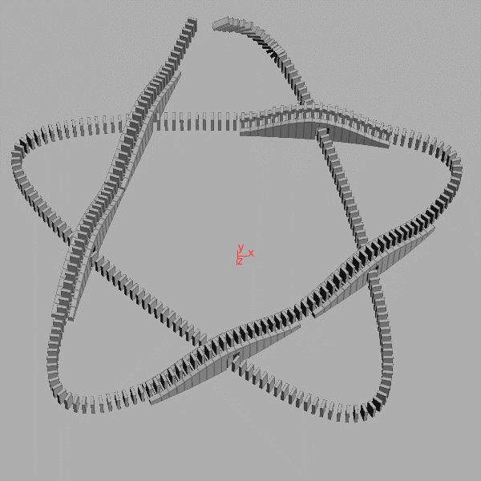
那么想在游戏引擎里面实时渲染之前的模拟结果的话 —— 怎么办？
最最简单的办法：直接导出顶点动画
alembic 是个不错的格式，就是实时渲染中每帧更新那么多顶点数据实在过意不去
所以这一节略，毕竟没啥值得说的
总之，上周这个动画渲染成 alembic 格式大概要 467MB，虽然能用又方便，但不到万不得已还是别这么玩比较好
骨骼动画是用骨骼驱动顶点的一种设计，通过适当的抽象，信息密度可以比顶点动画高很多，相信这里不用对这么基础的概念做过多解释，简而言之：至少目前而言，蒙皮+骨骼动画乃是实时渲染领域的正道
那么试试看吧，首先 Houdini 自己有输出 fbx 的功能，进入 /out 网络，添加 filmboxfbx 节点，试试：
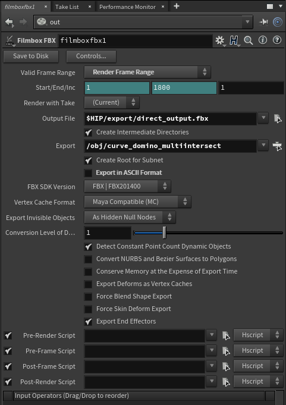
=>
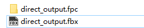
得到一份 173KB 的 FBX 以及一份 223MB 的 FPC(Geometry Cache)，果然被当做顶点动画对待了
换一条路，Houdini Game Tools 里面非常贴心的准备了 rbd to fbx 功能：
emmmmm .... 看样子要等一等
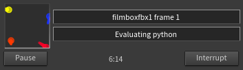
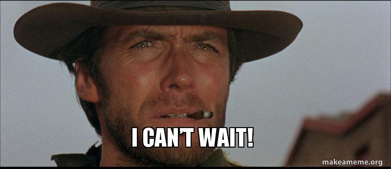
emmmmmmmmmmmmmm ....
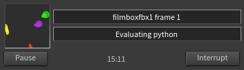
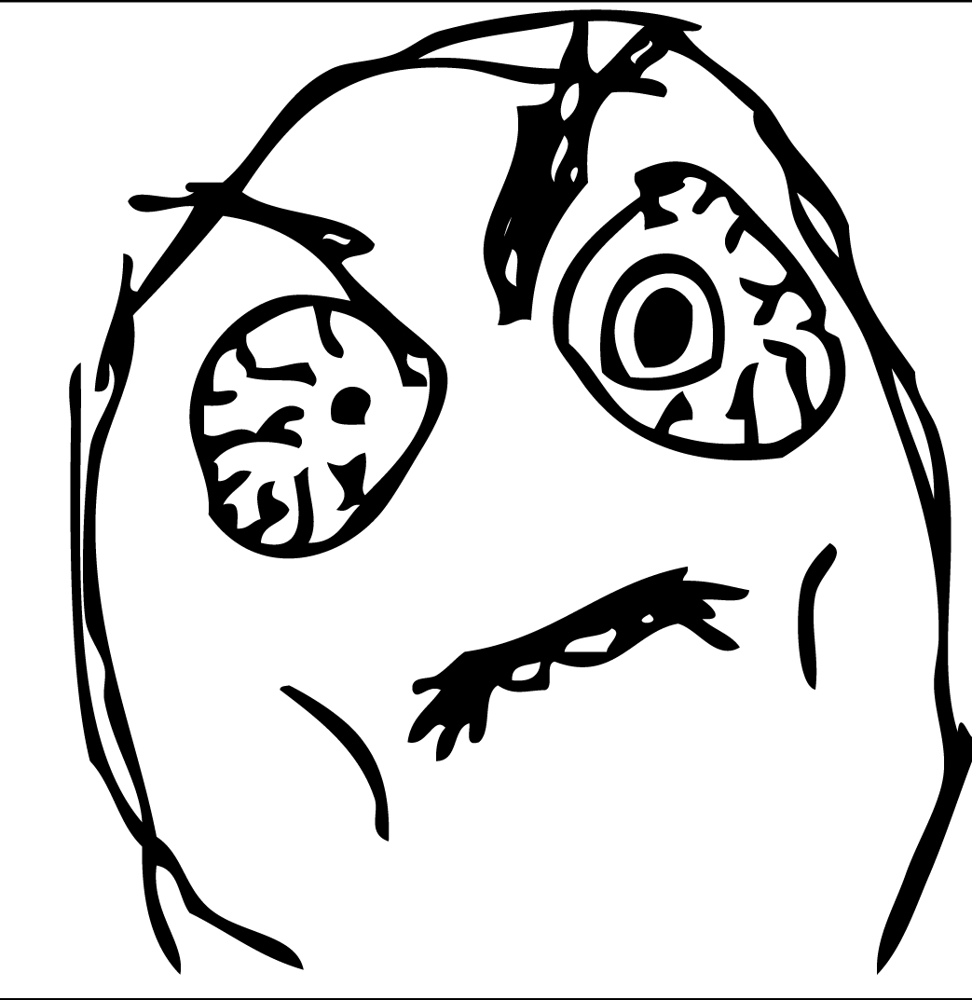
emmmmmmmmmmmmmmmmmm ....
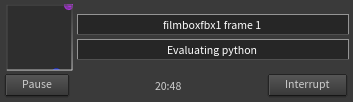
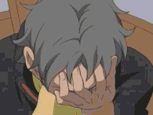
emmmmmmmmmmmmmmmmmmmmmmmmmmmmmm .....
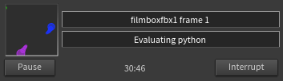
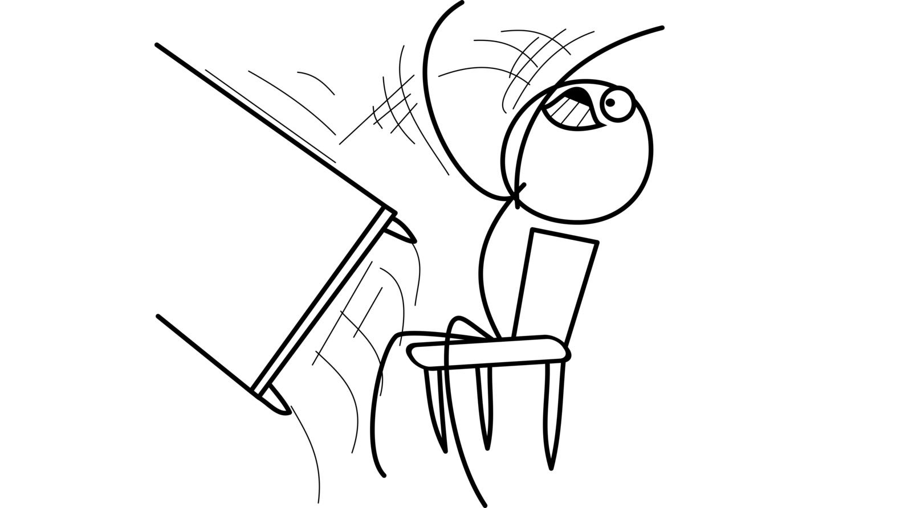
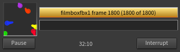
┬─┬ノ( º _ ºノ)
终于在大约36分钟之后，导出完成了 ……
导出的 fbx 大约 106MB，能用
能用是能用，有没有更好的方法呢
我们试试再换一条路，Houdini 非常贴心地准备了 skinning converter 功能，自动将顶点动画转换为蒙皮动画：
GAME TOOLS | SKINNING CONVERTER
给它个机会：
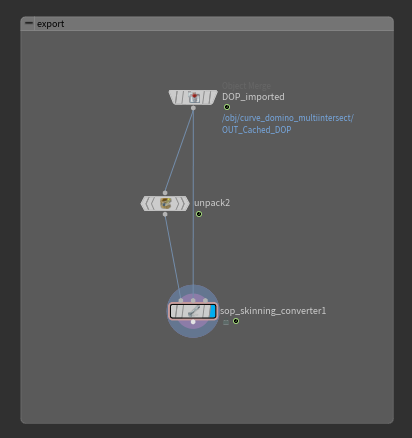
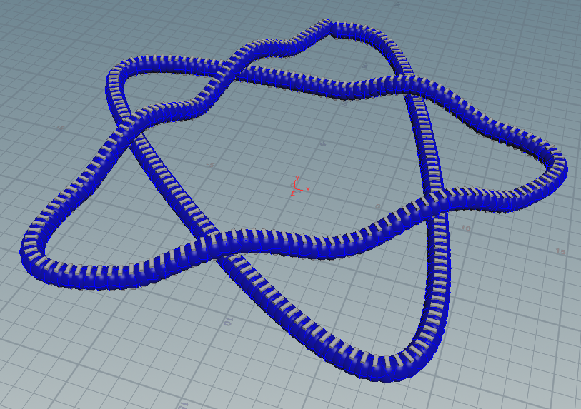
看上去离成功只有一步之遥了，但是哪有这等好事：
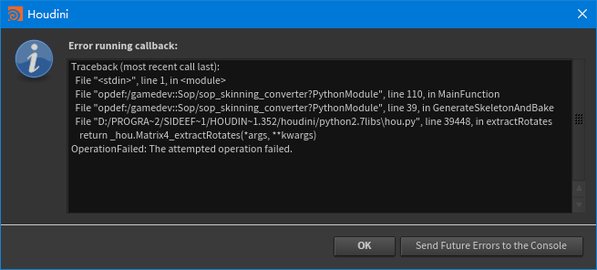
总之(在我看来)官方提供的途径都有点遗憾，直接导出是顶点动画，rbd to fbx 太慢，skinning converter 不是这么用的；所以干脆自己重新造个轮子吧，编程的乐趣不就在这儿吗
看看 rbd to fbx 是如何实现的： rop_rbd_to_fbx/PythonModule
为了清楚点看到它的工作原理，首先把它输出之后的 cleanup 操作禁用掉，然后改一下输出时间范围再导出一次(少导出几帧，避免再等 40 分钟 ...)
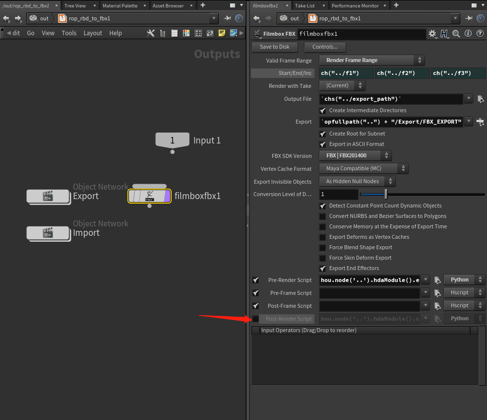
接下来在 /out/rop_rbd_to_fbx/Export/FBX_EXPORT/TRANSFORM_NODE 路径下面可以看到这样的景象：
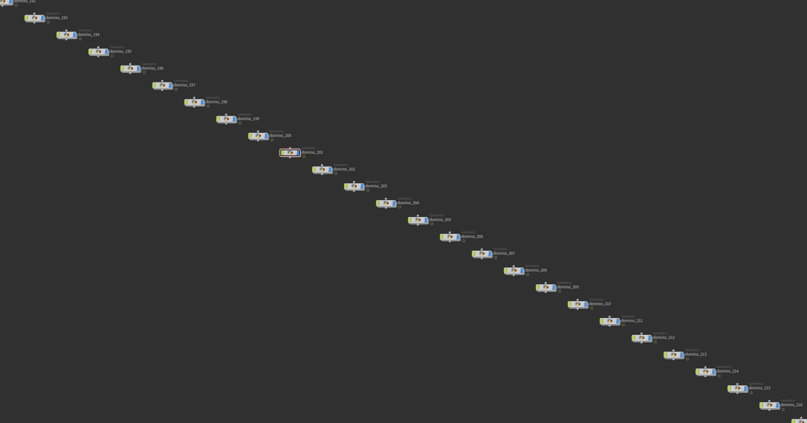
很明显，rbd to fbx 是把想要导出的那个物件拆成了 N 份 Geometry，每个骨牌的运动被重新表示成了各自 Geometry 的动画
若是在祖传 In-house engine 或是 Unity 那儿，美术这么干可能会被程序打的 /*好在我是程序，没人能打我*/ —— 这样的结构每个 Geometry 需要用一个 draw call 绘制
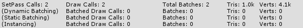
// Unity 空场景空跑
->
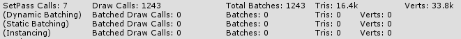
// Unity 添加一份 rbd to fbx 导出模型
好在 Unreal 足够聪明，fbx 导入之后自动转换成了 skinned mesh，在 Unreal 的世界这样做实际上是可以接受的
另一边，再看看 skinning converter 是怎么实现的： sop_skinning_converter/PythonModule
似乎 skinning converter 的思路更加简单清晰：在 skinning converter 内部用 OUT_ANIMATEDPOINTS 当作骨骼节点，点上的 xform 属性记录了每根骨骼每个时刻的变换矩阵，根据这些点上的信息便可以自动创建骨骼、记录关键帧了；然后 blah blah ... 别的都不太用得上
看起来并不难，干脆自己实现一个比 rbd to fbx 可靠更高效、比 skinning converter 简单好用的 rbd skinning converter 罢
把 bullet 模拟的结果表示为骨骼动画实际上挺简单的：
首先动态部分我们是用 rbd packed object 导入的，这意味着实际上每一个运动的部件都是个 packed geometry, 也就是说，各自的运动由一个点来驱动 —— 这个点不就正适合作为骨骼吗
然后，把这个点 unpack 还原，得到的 geometry 正好也知道它应该蒙到哪根对应的骨骼上了
再然后，bullet 模拟出来的点上不但有位置属性(@P)、有朝向属性(@orient)，还有是否处于休止状态的 @bullet_sleeping 属性，正好可以过滤掉无用的关键帧
简直完美！
所以，自己干吧：
先新建 subnetwork，随便连一下：
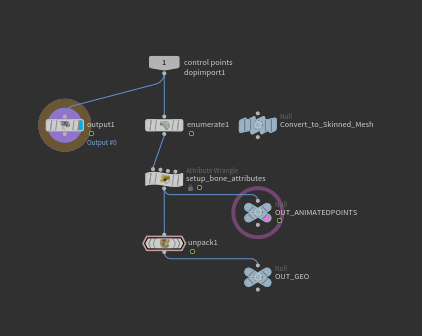
其中 convert_to_skinned_mesh 是个 null 节点，上面手动添加了一个 python 输入框(code)和一个按钮(exec hou.pwd().parm('code').eval())，手动触发的感受比较舒适
enumerate 用于在每个骨骼点上记一个 index，在 unpack 的地方把 index attribute 转移到对应的顶点上，这样每个点就知道自己应该蒙在哪根骨骼上了
然后撸代码：
先生成骨骼 /*从 skinning converter 那边抄点过来*/：
def GenerateSkeletonAndBake(a_Container, a_Subnet, a_RootBone, a_StartFrame, a_EndFrame):
BoneList = []
print "Generating Skeleton..."
for point in hou.node(a_Container.path()+"/OUT_ANIMATEDPOINTS").geometry().points():
CaptureRadius = point.attribValue("BoneRadius")
Bone = a_Subnet.createNode("bone")
Bone.setName(point.attribValue("name"))
Bone.parm("rOrd").set(0)
Bone.parm("length").set(0.1)
Bone.parm("captposelen").set(0.1)
for parm in ['crtopcapx', 'crtopcapy', 'crtopcapz', 'crbotcapx', 'crbotcapy', 'crbotcapz']:
Bone.parm(parm).set(CaptureRadius)
Bone.setNextInput(a_RootBone)
Bone.moveToGoodPosition()
BoneList.append(Bone)
然后把从 xform 属性提取 Translate 和 Rotation 的逻辑给魔改一番：
# 前略
for i, Bone in enumerate(BoneList):
sleeping = AnimGeometry[i].attribValue('bullet_sleeping')
orient = hou.Quaternion(AnimGeometry[i].attribValue('orient'))
pos = hou.Vector3(AnimGeometry[i].attribValue('P'))
if sleeping==1:
continue
Translate = pos
Rotation = orient.extractEulerRotates()
for i, parm in enumerate(['tx', 'ty', 'tz']):
SetKeyFrame(Bone.parm(parm), F, Translate[i])
for i, parm in enumerate(['rx', 'ry', 'rz']):
SetKeyFrame(Bone.parm(parm), F, Rotation[i])
骨骼生成好了:
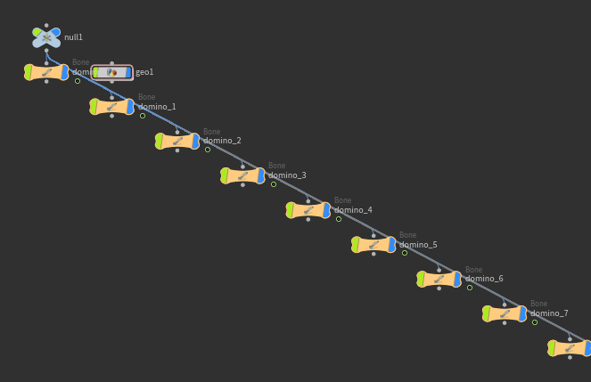
那么蒙皮怎么办 —— 我们看看使用 skinning converter 生成的 geo1 是个怎么回事：
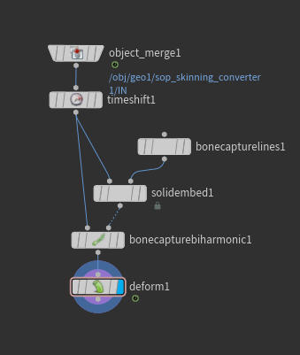
唔 ... 连了一堆神奇的自动蒙皮装置
然而我们不需要，我们已经知道哪个顶点对应的是哪根骨骼了
那要如何去写入这个信息呢
先到 geometry spreadsheet 里面找找看蒙皮信息是如何记录的吧 ——
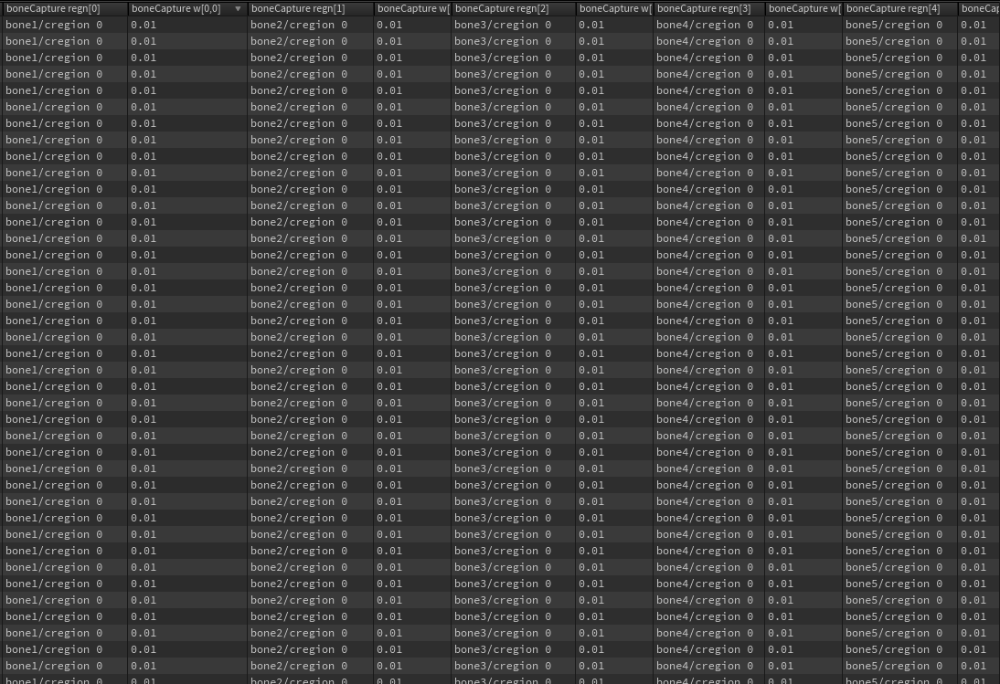
大概是这么个东西，懵了，这是啥，怎么改，orz
好在有 capture attribute unpack 这么个好东西，unpack 了之后我们再看看：
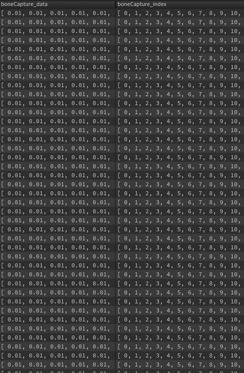
这下骨骼编号以及对应的权重就一目了然了
所以我们可以在 capture attribute unpack 下面加上一个 attribute wrangle，自己设一下 index 和 data:
i[]@boneCapture_index = array(i@index);
f[]@boneCapture_data = array(1.0);
然后再用 capture attribute pack 还原回去：
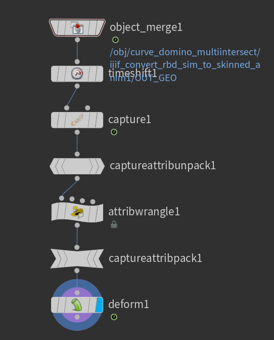
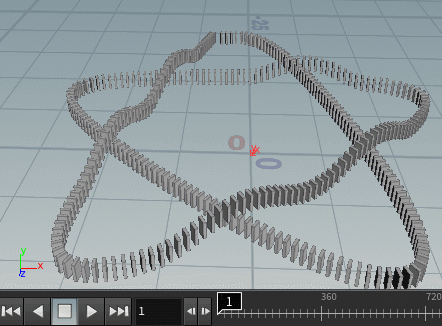
LOOKS GOOD.
剩下的事情就是把这段连接关系用 python 自动生成出来:
ObjMerge = Geometry.createNode("object_merge")
ObjMerge.parm("objpath1").set(ThisNode.parent().path()+"/OUT_GEO")
ObjMerge.parm("xformtype").set("local")
TimeShift = Geometry.createNode("timeshift")
TimeShift.parm("frame").deleteAllKeyframes()
TimeShift.parm("frame").set(FrameRange[0])
TimeShift.setNextInput(ObjMerge)
TimeShift.moveToGoodPosition()
CaptureNode = Geometry.createNode("capture")
CaptureNode.setNextInput(TimeShift)
CaptureNode.parm("rootpath").set(Root.path())
CaptureNode.moveToGoodPosition()
UnpackNode = Geometry.createNode("captureattribunpack")
UnpackNode.setNextInput(CaptureNode)
UnpackNode.moveToGoodPosition()
WrangleNode = Geometry.createNode("attribwrangle")
WrangleNode.setNextInput(UnpackNode)
WrangleNode.parm("snippet").set('''
i[]@boneCapture_index = array(i@index);
f[]@boneCapture_data = array(1.0);
''')
WrangleNode.moveToGoodPosition()
PackNode = Geometry.createNode("captureattribpack")
PackNode.setNextInput(WrangleNode)
PackNode.moveToGoodPosition()
Deform = Geometry.createNode("deform")
Deform.setNextInput(PackNode)
Deform.parm("donormal").set(1)
Deform.parm("fast").set(1)
Deform.moveToGoodPosition()
Deform.setDisplayFlag(True)
Deform.setRenderFlag(True)
导出，完成！
这下哪怕 Unity 也能开心的渲染了：
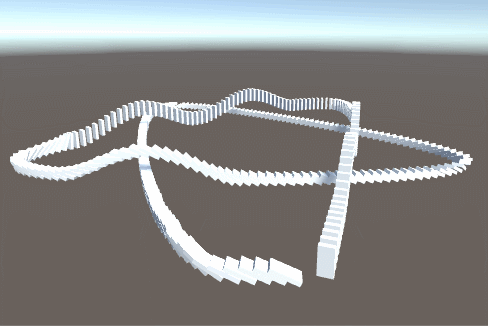
而且 Draw Call 数量感人 ——
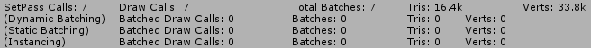
fracture 自然也不是问题：
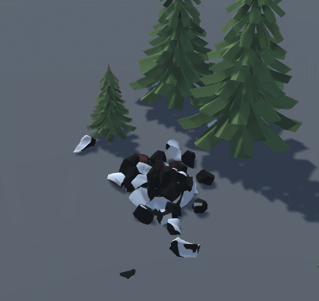
存一个 hda，完结！散花！
Update:
忘了总结：比官方所有的版本导出速度快(2.2min)、导出体积小(36MB)、运行代价小，这个轮子没白造。
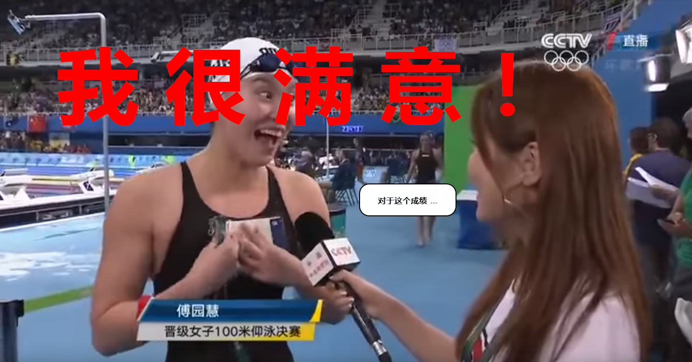